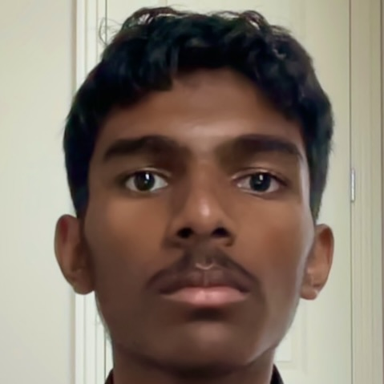
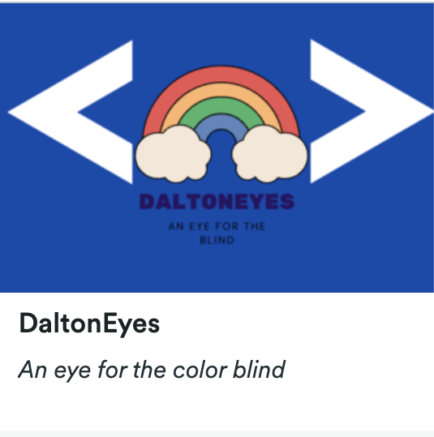

About Me
Innovation and Ambition have stained humans for all of existence and now we have finally found what we were looking for aritificial intelligence. The only thing we need for AI is to figure out how to bring out its full potential. In the future I plan to be a computer engineer focusing on utilizing Artificial In to help others.I plan to study extensively on the mathematics of neural networks and tensorflow in college and high school in order to achieve this.This is my career choice because I have a deep intrest in neural networks and really enjoy building AI.
I feel that I posses the charachterisics of persistence, determination and tolerence. One experience that can speak for my persistence in this class is when me and my partner were working on this one assignment we found a big challenge using this one function that was very poorly documented in python. However instead of giving up I continued to work on my assignment and test different options in order to get the assignment done on time. An experience I have had where I really exemplified my determination is when I had a very challenging taekwondo competition to compete in and at that time I felt like just going home but instead I pushed through and was determined to suceed and give my best at the competition. Lastly I am also tolerant as I live by the motto "It is what it is" meaning that if something happens to me which I am not proud of I should know that I tried my best and there isn't anything I could have done about it. For example, if I don't do the best on a test I should learn from it instead of regretting it.
One of my greatest skills is Taekwondo. I have won many awards in Taekwondo forms and like practicing movements and being physically active overall. The skills that came with this is good communication skills as one of the main requirements to suceed in Taekwondo is to be able to communicate effectively with others. My other skill is being able to adapt to new situations as I like the exitement, unknowns and adventure it brings. Lastly one of my greatest achievements was being able to learn calculus and AI on my own. I pride this because it taught me that I too have the ability to learn.
Resume/Work Experience
CSE Student specializes in python and has certification for the Nvidia Jetson Nano.
View Resume (Google Doc)Projects
Daltoneyes
Date: 4/7/2024
Color correction algorithm to aid the viewing experience of the colorblind.
Role: Created the flask server that was set up in order to connect to the JS frontend.
Challenges: Finding reliable matrices and loss calculation algorithms for the best results.
Skills: Algorithm Creation, Flask, Numpy.
 Full Project DocumentationPersonal Portfolio
Course: CSE
Date: 5/22/2024
Creation of a portfolio to showcase my accomplishments and to share with the world more about myself.
Role: Designed the entire webpage by learning Vue.js.
Challenges: Learning Vue.js syntax and getting the AOS animations to work.
Skills: JavaScript, Vue.JS, UI.
You are looking at it right now!
Full Project DocumentationContact Me
Dublin, CA
thenappan4920@mydusd.org
Phone number to be added later